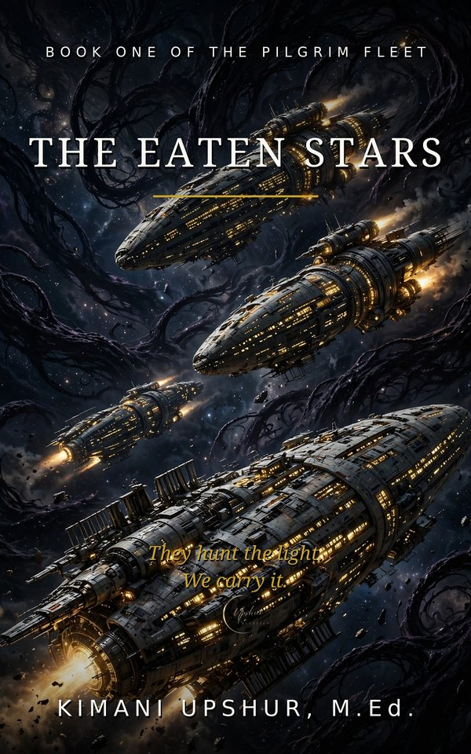

Watch the Book Trailer
Experience the story before you read it.
Enjoyed the Trailer? Read the Book.
Readers Also Browse
More Fiction titles.

Experience the story before you read it.
Enjoyed the Trailer? Read the Book.
More Fiction titles.